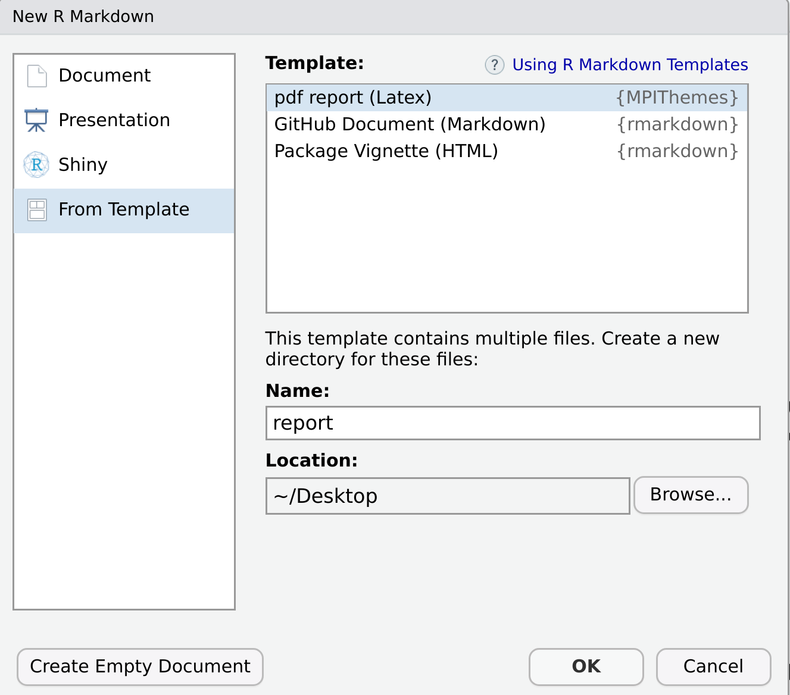
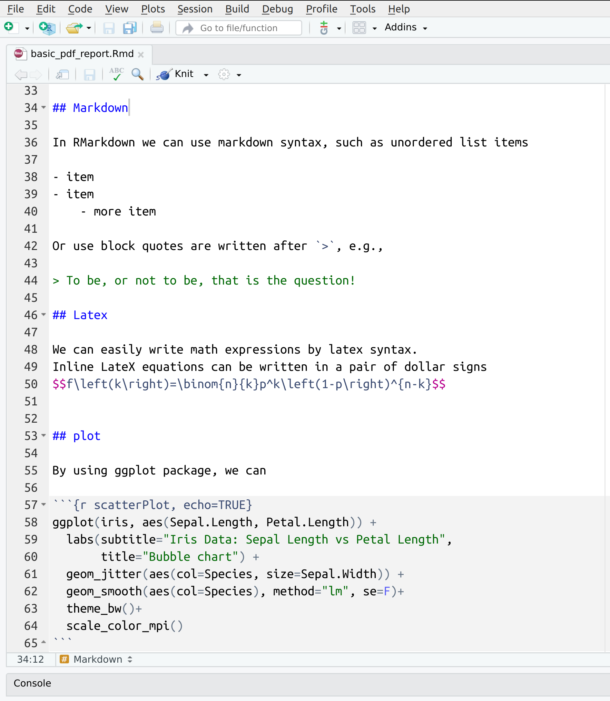

To compile PDF documents with R, you must have Pandoc, LaTeX, and a few other packages installed.
Pandoc: Pandoc is already installed if you have a recent version of RStudio. There’s no need to be concerned if you’re unfamiliar with pandoc.
XeLatex: The pdf RMarkdown templates compile with XeLatex. You will need to install some version of XeLatex. If you do not have one, there is a simple way in R. Tinytex is A lightweight LaTeX distribution that is sufficient for compiling pdf templates. To install the tinytex package and a working version of LaTeX run these commands:
install.packages("tinytex")
tinytex::install_tinytex()The MPITheme package requires additional LaTeX dependencies that tinytex does not install by default. If you are online, these dependencies will be installed automatically.
MPITheme package from GitHub. This package is not (yet) available on CRAN.
if(!require(devtools)) install.packages("devtools")
devtools::install_github("lcreteig/amsterdown") After installing the package, you may need to restart RStudio in order to add new templates to Rstudio.
Follow these simple steps to create the First Report.:
1: In RStudio menu, go to File > New File > R Markdown > From Template.
2: Select the pdf report template from the list, Then set the name and directory location and finally click OK. In a location directory, a Rmd file and a project structure will be created.

3: Knit the document by clicking on the Knit icon in the top bar of the Rstudio editor or its better to use keyboard shortcut for knitr, command + Shift + K on a Mac, or Ctrl + Shift + K on Linux and Windows.
4: Your document will automatically include default YAML headers
---
title: Statistical analysis of behavioral data
date: "14 September, 2021"
author: [Ahmad Ehyaei, Sara Ershadmanesh]
affiliation: Max Planck Institute for Biological Cybernetics
location: Tübingen
titlepage: true
toc: true
content-has-page: true
logo-primary: src/icon/MPILogoGray.eps
logo-secondary: src/icon/MPIBCWhite.eps
output:
MPIThemes::latex_report
---Fill in these YAML options with your information. There are plenty of other YAML options; see the PDF Report Template Customization article.
5: Fill in your report’s content. For a pdf template, you can use the markdown command or tex.

6: Knit the Rmd file and see result!.